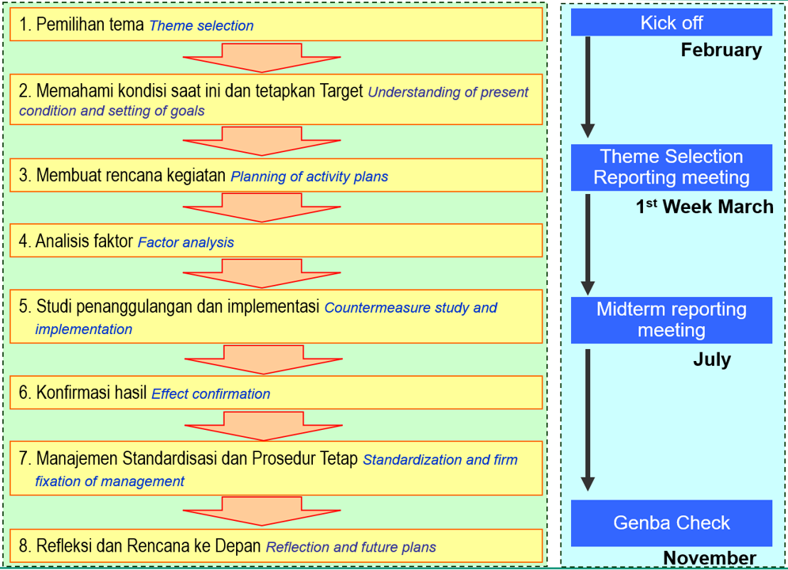

Apa itu Problem Solving?
Problem Solving adalah keterampilan dan kebiasaan yang dipelajari sehingga kerangka berfikir menjadi sistematis dan rasional / utuh menghasilkan solusi yang menjadi dasar tindakan untuk mencapai tujuan.
Problem Solving dalam QCC adalah proses sistematis menggunakan siklus PDCA (Plan-Do-Check-Action) untuk menyelesaikan masalah di tempat kerja hingga tuntas ke akar-akarnya.
4 Sikap yang Menghambat Problem Solving
- Sikap takut gagal: Melihat masalah sebagai suatu kendala yang tidak dapat diselesaikan karena takut gagal jika coba untuk memecahkannya.
- Suka mengkritik: Melihat masalah karena kesalahan orang lain, kondisi ataupun situasi tanpa bisa memberikan solusi.
- Sikap Pemimpi: Sudah berusaha menyelesaikan masalah dengan memiliki rencana-rencana yang baik, namun tidak melakukannya.
- Sikap "Reaksi Cepat": Langsung bertindak begitu mendapatkan masalah tanpa mau berhenti sejenak untuk menganalisa lebih dalam apa akar permasalahannya. Tidak memiliki rencana yang matang sebelum bertindak.
Sikap Problem Solver yang Baik
- Mereka tidak anti dengan masalah.
- Tidak takut dengan masalah.
- Lebih berfokus pada lingkaran pengaruh.
- Memiliki keberanian dan kecepatan dalam memecahkan masalah dengan didahului mencari akar penyebab masalah yang sebenarnya.
- Membuat rencana perbaikan.
- Mulai bertindak menuju tujuan dengan tidak pernah berhenti.
- Memantau tujuan mereka sendiri untuk memastikan apakah mereka menuju arah yang benar.
Tujuan QCC dalam Problem Solving
- Meningkatkan kemampuan analisis dan pemecahan masalah karyawan.
- Menciptakan budaya peningkatan berkelanjutan (Continuous Improvement).
- Meningkatkan mutu produk, layanan, dan kepuasan pelanggan.
- Membentuk teamwork yang solid dan komunikasi yang baik.
1. Managemen VS Kaizen
Management adalah:
"Based on the current procedures, to make the condition of quality of product, service and work stable in desirable condition and to maintain it."
Berdasarkan prosedur saat ini, membuat kualitas dan pekerjaan stabil serta mempertahankannya.
Kaizen adalah:
"To change the current procedures, and to improve quality level of product, service and work, into more desirable condition."
Merubah prosedur saat ini untuk memperbaiki level kualitas menjadi kondisi yang lebih diinginkan.

Hubungan SDCA (Management) dan PDCA (Kaizen)
- Siklus SDCA (Standardize - Do - Check - Act)
- Standard: Menetapkan metode dan standar kerja baku sebagai fondasi operasional.
- Do: Melaksanakan aktivitas pekerjaan dengan disiplin sesuai standar tersebut.
- Check: Memverifikasi apakah hasil kerja telah sesuai dengan standar yang ditetapkan.
- Act: Mempertahankan kondisi kerja jika hasil sudah stabil dan memenuhi standar.
- Siklus PDCA (Plan - Do - Check - Act)
- Plan: Menetapkan target baru atau sasaran perbaikan ketika standar saat ini perlu ditingkatkan.
- Do: Menguji coba rencana perbaikan dan prosedur baru yang telah dirancang.
- Check: Mengevaluasi apakah hasil dari uji coba tersebut berhasil mencapai target baru.
- Act: Melakukan tindakan korektif lebih lanjut jika hasil belum optimal atau menstandarisasi jika berhasil.
Hubungan dengan Materi Problem Solving
- Identifikasi Masalah (Transisi SDCA ke PDCA): Masalah muncul ketika siklus SDCA menunjukkan hasil yang tidak sesuai standar. Pada titik ini, tim beralih ke siklus PDCA untuk mencari solusi dan menetapkan target baru.
- Pencarian Solusi (Tahap Plan): Dalam proses pemecahan masalah, tahap Plan digunakan untuk melakukan brainstorming guna mengumpulkan ide terbaik dari seluruh anggota.
- Pencegahan Masalah Berulang (Transisi PDCA ke SDCA): Setelah solusi PDCA terbukti berhasil, hasil tersebut harus dijadikan sebagai Standar Baru dalam siklus SDCA agar masalah tidak terulang kembali.
- Disiplin Eksekusi: Jika keputusan PDCA tidak dilaksanakan secara nyata, QCC akan menjadi "circle sedang tidur" (Kyushi) dan masalah tidak akan pernah teratasi.
Siklus Managemen dan Kaizen:

Analisis Grafik: Repetition of Management and Kaizen
- Siklus Manajemen (SDCA): Berperan sebagai penstabil. Setelah perbaikan dilakukan, standar baru dikunci agar performa tidak kembali turun (mencegah regresi).
- Siklus Kaizen (PDCA): Berperan sebagai pendorong. Digunakan untuk mendobrak keterbatasan saat ini (status quo) guna mencapai target kualitas yang lebih tinggi.
- Penanganan Anomali: Grafik menunjukkan bahwa perbaikan harus segera dilakukan saat terjadi ketidaknormalan (*abnormality*) agar tidak berlarut dalam kondisi buruk.
- Pencapaian Progress: Kemajuan besar hanya bisa dicapai melalui pengulangan yang disiplin antara perbaikan (Kaizen) dan standarisasi (Management).
2. Enam Misi di Tempat Kerja (Target Q-C-D-S-M-E)
| Kategori | Tujuan / Deskripsi |
|---|---|
| Q – Quality (Kualitas) | Menghilangkan kerusakan (ketidaksesuaian), perbaikan kualitas, mengurangi error,dan menghasilkan performa yang baik . |
| C – Cost (Biaya) | Pengurangan biaya (Reduce the cost). |
| D – Delivery (Pengiriman/Waktu) | Menjaga ketersediaan jumlah dan ketepatan waktu. |
| S – Safety (Keselamatan) | Menjaga keselamatan kerja (Maintain safety). |
| M – Morale (Moral/semangat kerja) | Meningkatkan moral dan sikap kerja. |
| E – Environment (Lingkungan) | Memelihara lingkungan kerja (Preserve environment). |

Enam Misi di Tempat Kerja (Six Missions of Workplace)
- Mencapai Tujuan Kerja: Hasil akhir yang diinginkan oleh perusahaan.
- Enam Misi Utama: Fokus pada elemen Q, C, D, S, M, dan E untuk mencapai tujuan tersebut.
Kelompok A: Daya Saing Produk
- Q (Quality): Menjamin kualitas produk agar bebas cacat.
- C (Cost): Menekan biaya produksi agar lebih efisien dan kompetitif.
- D (Delivery): Memastikan pengiriman produk tepat waktu kepada pelanggan.
- Tujuan: Memperkuat persaingan produk di pasar.
Kelompok B: Sumber Daya Manusia
- S (Safety): Menjamin keselamatan kerja bagi seluruh karyawan.
- M (Morale): Menjaga semangat kerja, motivasi, dan etika tim.
- Tujuan: Memperkuat kerjasama tim (teamwork).
Kelompok C: Lingkungan & Sosial
- E (Environment): Menjaga kelestarian lingkungan dan keberlanjutan.
- Tujuan: Berkontribusi pada masyarakat secara luas.
3. Apa Masalah itu? What is Problem?
Poin-point Masalah adalah sebagai berikut:
- Hal yang menyulitkan pekerja.
- Pekerjaan terlalu sulit/masalah rutin.
- Kesalahan (error) yang terjadi.
- Ketidak-nyamanan terkait keselamatan.
- Hal sia-sia (uang, material, waktu).
- Kecelakaan atau cacat produk.
- Proses Rework yang berulang.
- Membutuhkan waktu terlalu lama.
“Problem” is “the difference (gap) between ideal situation/goal and present situation”
“Masalah” adalah perbedaan (gap) antara situasi ideal/sasaran dengan situasi saat ini.

1. Definisi Masalah (Problem)
Masalah didefinisikan sebagai "Gap" atau Celah yang terjadi antara harapan dan kenyataan. Secara visual, ini digambarkan sebagai jarak vertikal antara dua titik utama:
- Ideal Situation/Goal (Situasi Ideal/Sasaran): Titik tertinggi yang ingin dicapai atau standar yang telah ditetapkan.
- Present Level (Level Saat Ini): Kondisi aktual atau realitas performa yang terjadi di lapangan pada saat ini.
2. Rumus Masalah
Untuk memudahkan pemahaman, masalah dapat dinyatakan dalam rumus sederhana:
Artinya, jika tidak ada selisih antara target dan kenyataan, maka tidak ada masalah yang perlu diselesaikan.
3. Parameter Pengukuran (QCDSME)
Di sisi kiri gambar terdapat panah yang mengarah ke atas bertuliskan "Good Baik", yang didasarkan pada Control Characteristics atau Karakteristik Pengawasan (QCDSME).
Jadi, mengidentifikasi masalah dimulai dengan menentukan standar ideal, mengukur kondisi sekarang, dan mengakui adanya celah di antara keduanya melalui kacamata QCDSME.
4.Prosedur untuk Pemecahan Masalah (Why Type) dan Rencana ke Depan
Prosedur Pemecahan Masalah (Why Type) dan Rencana Kegiatan (Timeline) dalam sebuah proyek atau siklus manajemen (seperti QC Story atau PDCA).
Berikut adalah penjelasan detail dari tahapan-tahapan tersebut:
1. Delapan Tahap Pemecahan Masalah
Bagian ini menjelaskan langkah-langkah sistematis untuk menyelesaikan sebuah masalah:
- Pemilihan Tema (Theme Selection): Menentukan topik atau masalah spesifik yang akan diselesaikan.
- Memahami Kondisi Saat Ini dan Menetapkan Target: Melakukan observasi data lapangan untuk melihat seberapa besar kesenjangan yang ada, lalu menentukan target yang ingin dicapai.
- Membuat Rencana Kegiatan (Planning of Activity Plans): Menyusun jadwal, pembagian tugas, dan sumber daya yang dibutuhkan.
- Analisis Faktor (Factor Analysis): Mencari akar penyebab masalah (biasanya menggunakan fishbone diagram atau metode 5-Why).
- Studi Penanggulangan dan Implementasi: Merancang solusi untuk mengatasi akar masalah dan melaksanakannya di lapangan.
- Konfirmasi Hasil (Effect Confirmation): Mengecek apakah solusi yang dijalankan berhasil menurunkan masalah sesuai dengan target di langkah ke-2.
- Manajemen Standardisasi dan Prosedur Tetap: Jika berhasil, buatlah standar baru agar masalah yang sama tidak terulang kembali.
- Refleksi dan Rencana ke Depan: Mengevaluasi seluruh proses dan menentukan masalah apa lagi yang perlu diselesaikan selanjutnya.
2. Jadwal Pelaksanaan / Timeline (Sisi Kanan)
Bagian ini menunjukkan target waktu pelaksanaan untuk setiap fase pelaporan:
- Bulan Februari: Tahap Kick off (Memulai proyek).
- Bulan Maret: Melakukan Theme Selection Reporting Meeting (Rapat laporan pemilihan tema).
- Bulan Mei: Melakukan Midterm Reporting Meeting (Laporan kemajuan tengah periode, biasanya mencakup analisis hingga implementasi awal).
- Bulan November: Final Reporting Meeting (Rapat laporan akhir untuk mempresentasikan hasil dan standardisasi).
Diagram ini merupakan panduan bagi tim untuk bekerja secara terstruktur dari awal tahun (Februari) hingga akhir tahun (November) guna memastikan masalah diselesaikan secara tuntas berdasarkan data dan metodologi yang benar.
↑